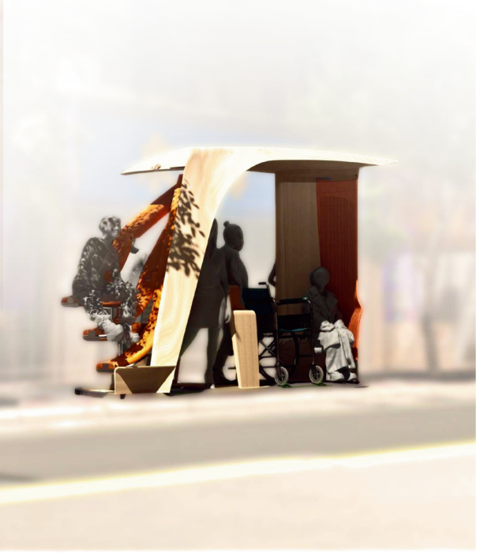

02 — 設計過程
研究與發展
在此填入設計過程說明。
0.15 °C /10yr ( 1898 – 2024 )
0.32 °C /10yr ( 1995 – 2024 )
0.32 °C /10yr ( 1995 – 2024 )
日本年均氣溫偏差 1880–2024（相對於 1991–2020 年平均值）
03 — 最終設計
成果展示
在此填入最終設計說明。

02 — 設計過程
在此填入設計過程說明。
日本年均氣溫偏差 1880–2024（相對於 1991–2020 年平均值）
03 — 最終設計
在此填入最終設計說明。